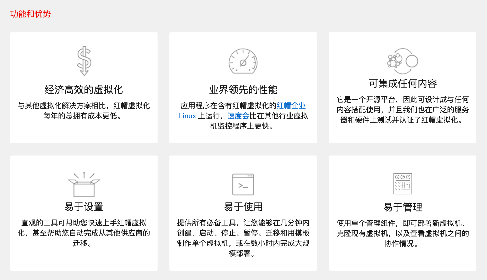

ACI Red Hat VMM集成
背景信息
本文将演示如何实现ACI与Red Hat Virutalization (RHV)的集成。
红帽®虚拟化是一个开放的软件定义平台，可以虚拟化 Linux 和 Microsoft Windows 工作负载。它以红帽企业 Linux® 和基于内核的虚拟机（KVM）为骨架，内含的管理工具可以虚拟化资源、进程和应用程序，从而为未来的云原生和容器化提供一个稳定的基础。更多关于RHV的信息请浏览红帽官方网站：

RHV安装文档：
Red Hat Virtualization 4.2 installation guide